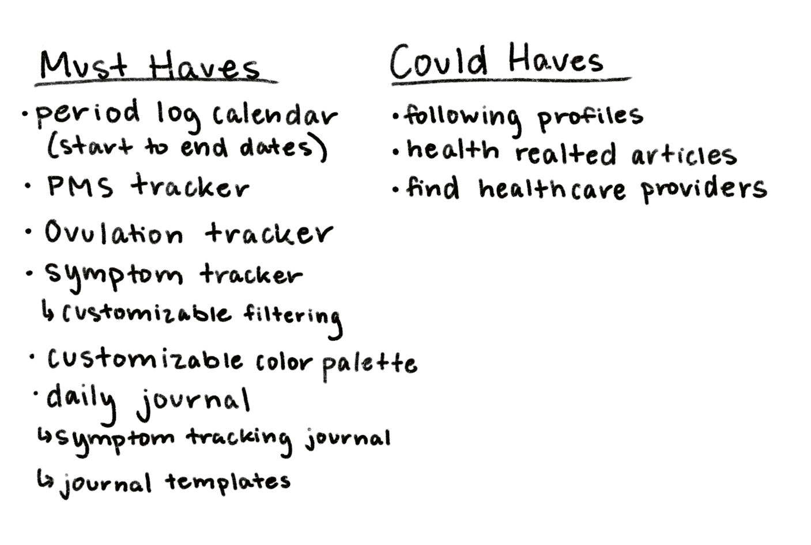

User Research/ UX Design/ UI Design

As a nonbinary individual with a menstrual cycle, I face challenges in relating to conversations about menstruation. Many “feminine” care products are designed exclusively for women, excluding a significant portion of people who also need these products. Similarly, existing cycle tracking apps predominantly cater to women, using language and features that inadvertently exclude a large demographic of their users. This realization sparked my idea of creating an inclusive menstrual cycle app. By prioritizing gender-inclusive language and terminology, Ours will provide a welcoming space for users to track their menstrual health and hygiene, irrespective of gender identity, sexual orientation, or health condition.
3 weeks
Tools UsedFigma, Zoom, Notion
PlatformsMobile
Competetive Analysis
Survey
User Interview
Week 1
Affinity Diagram
Problem Statement
Feature Prioritization
Week 2
User Diagram
Lo/Mid-Fi Prototype
Presentation
Week 3

One major concern regarding my research is the scarcity of similar existing apps in the market. Therefore, during user interviews, I made a deliberate effort to articulate the app's intentions, considering that many users are accustomed to using less inclusive apps . My goal was to encourage users to surpass their existing familiarity with other apps and explore their true wants/needs in-depth.
I had three main goals while conducting this research.1. Gain insights into what is and what's not working on existing menstrual cycle apps
2. Learn about what could improve the user's experience through user interviewing.
3. Identify pain points and begin ideating around different design concepts
I began my research by doing a quick competitive analysis. I examined three of the most popular cycle tracking apps in the market: Flo, Clue, and My Calendar.
The research focused on these 3 things:
1. The company’s branding choices
2. The information architecture on their navigation bars and home screens
3. Trends between competitors in terms of information architecture and stylistic choices
Here are the key insights from this research:
Let's address a prominent issue—the outdated assumptions about femininity and feminine care products in existing apps. Many menstrual health apps rely on clichéd designs with soft, pink, and floral aesthetics. This problem goes beyond the apps and extends to the entire menstrual healthcare product realm. These products fail to cater to a diverse user base, neglecting factors like sexual health tracking, PCOS symptom monitoring, and many more factors that may be important to people who use these apps. Moreover, the absence of gender-inclusive language makes it challenging for trans and nonbinary individuals to find a safe space to track their menstrual health and wellbeing. These apps lack inclusivity and personalization, failing users in fundamental ways.
My initial research aligned with the survey results I obtained. The survey gathered 12 responses from a diverse range of individuals representing various identities.
On a scale of 1 to 5, how would you rate the overall functionality of current period tracking apps?
On a scale of 1 to 5, How would you rate the overall inclusivity of current cycle tracking apps?
Many participants who provided further insights highlighted the use of gender-exclusive language as a concernUpon additional explanations, a significant number of respondents expressed frustrations with the lack of customizable features. One user remarked, "I would appreciate the ability to input my own symptoms. Why should the app dictate which symptoms I can and cannot track?"
After receiving survey feedback, I conducted interviews with four individuals: Sahar, Robin, Jess, and Hope. Each participant offered unique perspectives and identities, contributing to a diverse range of insights. Sahar (he/they/she) shared valuable insights as a masculine lesbian, expressing discomfort with using apps like Flo. Robin (she/they) discussed her struggles with Polycystic Ovarian Syndrome (PCOS) and how she finds it challenging to fit in with such apps. A common theme among the interviewees was their desire for customization options in menstrual cycle apps, as highlighted by Sahar's wish for personalized features. Jess (they/she) expressed frustration with the app My Life and desired the ability to disable unnecessary or unwanted features. Hope (she/her), who also deals with irregular periods due to PCOS, emphasized the importance of a journal or diary feature in a menstrual cycle app. Such a feature would allow her to log symptoms and track patterns for future discussions with her gynecologist.
(She/They)
“I would love to see something where I could personalize the app. I have PCOS so certain things don't work for me and if I have the chance to customize that I would want to use apps like Flo more”
(They/She)
“The only tools I have available to me are very pink and floral, and while there is nothing wrong with that, it feels weird to use. This is my health… I'm not trying to be cute”
(She/her)
“The predictions are never accurate. I would rather just be able to keep track of it myself instead of it being predicted. It can be helpful sometimes but it's easier to keep track of it manually”
After completing my research, I developed a problem statement that encompasses the overall goal for my mobile app.
People with periods need a digital tool to help them keep track of their menstrual health & hygiene in order to enforce better overall health habits and mental wellness.After reviewing the interview findings, the ideation process commenced to determine the essential features for the final app designs. The core functionality will be centered around a period calendar. Users will have the ability to add custom symptoms to their profiles and customize the app by enabling or disabling specific features to match their preferences. For example, users can choose to activate or deactivate the ovulation tracking log as needed. To enhance personalization further, diverse customization options like different color palettes will be provided. The app will also include a dedicated journaling section for users to freely document their daily experiences and observations.
Another potential feature is the ability to connect with friends and family within the app, allowing for shared calendar syncing—particularly helpful for users living together with synchronized cycles. Additionally, a blog section will offer tailored articles on various topics of interest, providing relevant resources to meet the diverse needs of users. For instance, a nonbinary user seeking trans-friendly healthcare providers may find a helpful guide in their profile. Lastly, the app will provide resources to local community and health centers, emphasizing the importance of support networks and ensuring users feel connected and supported throughout their menstrual experiences.
I drafted an initial outline of the possible dashboard design, incorporating the concepts identified during feature prioritization. Building upon these ideas, I then crafted a mid-fidelity prototype. The prototype primarily emphasizes the process of users adding symptoms to their period log and saving them to their profile. Within the prototype, users can choose symptoms from a predefined list and include any additional symptoms they desire to track.

My next steps in this project are to begin user testing on my Mid-Fi prototype.
By gathering feedback on these points, I aim to refine the user’s experience and optimize the design to better align with the user's needs. Based on the feedback received, I will refine the product accordingly. Finally, I will focus on building the final UI elements to create a complete and user-friendly mobile product for everyone to enjoy!